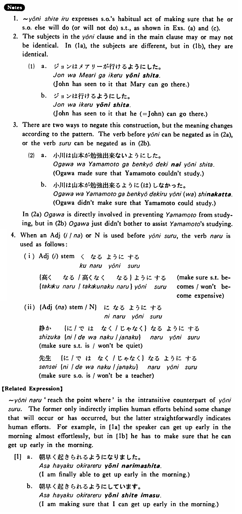

←
DoJG
→
ようにする
(B. 562)
Example sentences
(ks).
私は毎日運動する
ようにする・します
。
I'll make sure that I do exercises everyday.
(a).
出来るだけ日本語で話す
ようにしています
。
I'm making sure I speak Japanese as much as possible.
(b).
山川には会わない
ようにした
。
I've made sure that I won't see Yamakawa.
(c).
分からないことは先生に聞く
ようにしている
。
I made a point of asking my teacher about the things I don't understand.
(d).
毎朝八時に来る
ようにして
下さい。
Please make sure that you come at eight every morning.
(e).
後ろからもよく見える
ようにしました
。
I've seen to it that people can see from the rear seats, too.
(f).
成績がよくなる
ようにした
。
I’ve made sure that my grades will improve.
Formation
Vinformal nonpast
ようにする
{話す /話さない}
ようにする
Someone makes sure that he/someone else talks/doesn’t talk
{食べる /食べない}
ようにする
Someone makes sure that he/someone else eats/doesn’t eat
